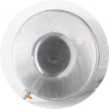
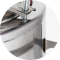
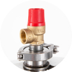
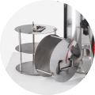
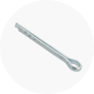

Дно автоклава специально спроектировано и изготовлено методом холодной штамповки, по особой уникальной технологии. Форма дна с лазом применяется в промышленном и военном строении, увеличивает жесткость и предотвращает возможную деформацию под действием температуры и давления. Такая технологическая особенность однозначно позволяет выдерживать давление в баке до 3 атмосфер при консервации.
Сварные швы в автоклаве располагаются на стенках бака, на 2 см ниже стыков, а не в углах, как было раньше. Благодаря этой конструктивной особенности обеспечивается абсолютная надежность и прочность соединения. Поэтому возможные протекания и разрывы в местах сварки просто исключаются. Автоклав работает на всех видах плит.


Встроенный клапан аварийного сброса давления в 3 Bar обеспечивает безопасное приготовление мясных блюд, где требуется температура в 120 градусов. При возникновении избыточного давления клапан срабатывает и понижает его до допустимого значения. Сертифицированный точный манометр показывает давление, которое будет меняться при нагреве.
Встроенный клапан аварийного сброса давления в 3 Bar обеспечивает безопасное приготовление мясных блюд, где требуется температура в 120 градусов. При возникновении избыточного давления клапан срабатывает и понижает его до допустимого значения. Сертифицированный точный манометр показывает давление, которое будет меняться при нагреве.


Встроенный клапан аварийного сброса давления в 3 Bar обеспечивает безопасное приготовление мясных блюд, где требуется температура в 120 градусов. При возникновении избыточного давления клапан срабатывает и понижает его до допустимого значения. Сертифицированный точный манометр показывает давление, которое будет меняться при нагреве.